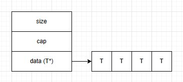
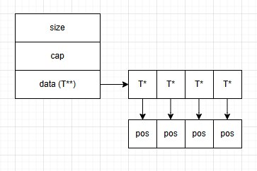
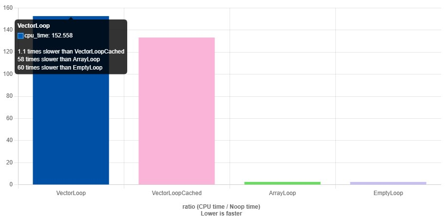

В разработке игр динамические и статические массивы являются основным инструментом при работе с набором объектов, буду дальше называть их vector. Вы можете подумать про разные map, set и другие ускоряющие структуры, но их тоже предпочитают делать поверх векторов. Почему так? Вектора просты для понимания, удобны для большого числа задач, особенно там, где объём данных заранее неизвестен или примерно известен. Но, как вы понимаете, за всё надо платить, и расплачиваться приходится производительностью, которой, как обычно, всегда не хватает. Так что использование динамических массивов имеет свои ограничения и особенности.
Это часть серии «Game++»:
- Game++. String interning
- Game++. Cooking vectors <=== Вы тут
- Game++. Dancing with allocators
- Game++. Juggling STL algorithms
- Game++. run, thread, run...
- Game++. Building arcs
- Game++. Unpacking containers
- Game++. Heap? Less
- Game++. Work hard
- Game++. Patching patterns
- Game++. while (!game(over))
- Game++. Bonus. Performance traps
std::vector и его аналоги часто используются для хранения всего, начиная от игровых объектов, таких как сущности, и заканчивая текстурами, сетевыми пакетами и тасками в шедулерах. Благо — это достаточно просто сделать и сопровождать. Это контейнер с последовательно выделенной памятью, который может хранить произвольное количество элементов. Каждый раз, когда ёмкость (capacity) увеличивается, vector выделяет новый блок памяти для нового размера и копирует туда старые элементы. Здесь тоже есть подводные камни, связанные с элементами, которым нужна поддержка операций копирования, что может вылиться в довольно нетривиальную задачу, когда некоторые классы и вовсе копировать нельзя.
Выделение памяти
В стандарте ничего не говорится о выделении памяти для пустого массива. При создании std::vector может выделяться блок памяти, достаточный для хранения некоторого начального числа элементов. Размер этого блока может варьироваться в зависимости от компилятора и реализации STL. Например, так поступает реализация std::vector от Nintendo, которая всегда выделяет место под 4 элемента при объявлении вектора.
С точки зрения компилятора, если мы объявили такой массив, то в большинстве случаев он будет заполнен, почему бы не сделать этого сразу. В принципе, это достаточно хорошая стратегия, за одним небольшим исключением: она будет хорошо работать только на платформе Nintendo, которая имеет отдельный аллокатор для небольших объёмов до 128 байт; если хотите больше — добро пожаловать в обычный медленный аллокатор, ну или пишите свой.
Когда добавляемых элементов становится больше, чем текущая ёмкость, std::vector увеличивает размер выделенного блока памяти. Обычно ёмкость увеличивается в N раз, но опять же точное значение коэффициента роста зависит от реализации. Некоторые реализации могут использовать коэффициент роста, который зависит от текущего числа элементов, чтобы минимизировать издержки на перераспределение памяти, другие полагаются на постоянный коэффициент.
При увеличении ёмкости все существующие элементы копируются в новый блок памяти. Это может быть дорогостоящей операцией, особенно если элементы имеют сложные конструкторы или деструкторы. Поскольку большинство реализаций вектора использует динамическую память, это приводит к её фрагментации, особенно в системах с ограниченными ресурсами, таких как консоли.
После увеличения ёмкости часть выделенной памяти остаётся неиспользованной, чтобы избежать частого перераспределения при добавлении новых элементов. Это компромисс между эффективностью памяти и производительностью. Особенно это явно проявляется на больших размерах и автоматическом режиме управления ростом ёмкости вектора. Условно при реальных 100 элементах в векторе памяти могло быть выделено под 150–200 элементов, что, конечно, при бездумном использовании векторов приводит в конечном итоге к вопросу: а где память деньги Зин?
Не все вектора одинаково полезны
Ну что, достаточно минусов у самого быстрого и популярного контейнера в игрострое? Давайте посмотрим, как можно от них избавиться. Совсем, конечно, не избавимся — игры стали реально жадные до памяти, и зачастую стека даже в 2 Мб на тред уже не хватает. Прежде чем двинуться дальше и посмотреть на разные трюки, приведу здесь высказывание одного легендарного разработчика:
Programmers waste enormous amounts of time thinking about, or worrying about, the speed of noncritical parts of their programs, and these attempts at efficiency actually have a strong negative impact when debugging and maintenance are considered. We should forget about small efficiencies, say about 97% of the time: premature optimization is the root of all evil. Yet we should not pass up our opportunities in that critical 3%.
Вы, скорее всего, слышали её короткую версию:
Premature optimization is the root of all evil.
Т.е. не занимайтесь фигнёй без предварительного анализа кода в профайлере, только время потеряете.
При проектировании нашей логики мы часто хотим получать однократную композицию (линейную, многомерную) в массивах, чтобы иметь хорошую локальность кеша, быстрый доступ и обработку. Непрерывное размещение данных в памяти очень хорошо сказывается на скорости работы, что делает такой вид std::vector самым эффективным по сравнению с другими. Выглядит как-то так:

Но из-за размеров и динамического характера объектов чаще получается двукратная композиция. Однако с точки зрения размещения в памяти std::vector из std::vector не является расширенной версией многомерного массива в C++. Первый хранится в одном непрерывном блоке памяти, тогда как второй — нет. Условно так:

Двукратная, или каскадная, структура std::vector имеет схему размещения памяти, схожую с std::deque, что является практически гарантированным промахом в кеше процессора без дополнительных усилий. Процессоры уже более-менее хорошо работают с двойным-тройным поинтером, но вот с большей размерностью поинтеров скорость падает катастрофически. Кроме того, и это более критично, каскадная структура std::vector требует множества операций выделения памяти, тогда как для многомерного массива достаточно одной. К сожалению, однократную композицию не всегда получается получить без лома и какой-то матери, поэтому второй вариант встречается значительно чаще.
При разработке софта, особенно там, где требуется высокая производительность, выделение памяти является серьёзным ограничением. В прошлом году Sony выкатила на превью требование, чтобы даже в нагруженных сценах fps не опускались ниже 60 (это якобы снижает пользовательский экспириенс), что даёт нам порядка 16 мс на подготовку кадра.
Системный вызов для аллокации памяти занимает 1–10 нс, если не было коллизии с другой аллокацией, когда время подбирается уже к 40 нс, или к 120 нс, если вызов оператора new или функции malloc() привёл к системному вызову для увеличения размера кучи, что, в свою очередь, включает переключение в режим ядра и возможный stall в треде. Есть, конечно, специализированные аллокаторы для игр и систем реального времени вроде TLSF или jemalloc; если кому-то будет интересно, тут же на хабре есть интересная статья на эту тему (https://habr.com/ru/articles/486650/) от @Spym.
Как вы видите, даже одна операция выделения памяти может стать узким местом, если она выполняется внутри часто вызываемой логики. В играх динамическое выделение памяти в большинстве случаев запрещено, вам 95% завернут такой код на ревью. Без веских на такое действие причин выделять память где хочется нельзя. Всё, что может быть выделено, должно быть выделено до старта уровня.
std::array
Первое, на что можно обратить внимание, если хочется скорости, но не хочется возиться с написанием собственных классов, будет стандартный массив C++. Он имеет точно N элементов, которые инициализируются при создании, это, конечно, не так удобно, как vector, который может иметь переменное количество элементов и не дёргает кторы на старте. К тому же нам самим придётся следить за размером через ещё одну переменную. К тому же array вызывает конструктор своих элементов, что также может просадить перф. Неудобно, но в крайнем случае, когда нет других альтернатив, вполне подходит. std::array — это просто статический массив C++, расширенный возможностями STL. Размер std::array всегда равен N, и это статическая величина, определённая на этапе компиляции.
std::vector vec = {} // 1, 2, 3, 4, 5 std::array vec = { 0 };
int vec_size = 0;Чем грозят беспорядочные связи с векторами
#include <cstdint>
#include <array>
#include <vector>
static void VectorLoop(benchmark::State& state) {
for (auto _ : state) {
std::vector<int> vec = {0};
for (int i = 0; i < 5; ++i) {
vec.push_back(i);
volatile int x = vec[i];
benchmark::DoNotOptimize(x);
}
}
}
static void VectorLoopCached(benchmark::State& state) {
for (auto _ : state) {
std::vector<int> vec = {0};
vec.reserve(5);
for (size_t i = 0; i < 5; ++i) {
vec.push_back(i);
volatile int x = vec[i];
benchmark::DoNotOptimize(x);
}
}
}
static void ArrayLoop(benchmark::State& state) {
for (auto _ : state) {
std::array<int, 5> arr = {1, 2, 3, 4, 5};
for (size_t i = 0; i < 5; ++i) {
arr[i] = i;
volatile int x = arr[i];
benchmark::DoNotOptimize(x);
}
}
}
static void EmptyLoop(benchmark::State& state) {
for (auto _ : state) {
std::array<int, 5> arr = {1, 2, 3, 4, 5};
for (size_t i = 0; i < arr.size(); ++i) {
volatile int x = arr[i];
benchmark::DoNotOptimize(x);
}
}
}
BENCHMARK(VectorLoop);
BENCHMARK(VectorLoopCached);
BENCHMARK(ArrayLoop);
BENCHMARK(EmptyLoop);
https://quick-bench.com/q/ScPhKA9CEtFcZp4DLLgTVBhFVfU
Но всё заменить на array тоже не получится — мы как-то столкнулись с проблемами при портировании игры с PS4 на Nintendo Switch, был некий код условно с 20 if'ами, в каждой ветке создавался временный объект. Код прекрасно работал на PS4, но для свича понадобился 21-й if со своим временным объектом. На плойке стек был 2 Мб, и на вызове этой функции уже было израсходовано условно 460 Кб. А вот на свиче стек не мог быть больше 480 Кб на любой тред, и для полного исчерпания стека тогда достаточно было, чтобы кто-то разместил на стеке ещё порядка 20 килобайт.
Вообще 20 Кб на стеке — это слёзы с точки зрения игрового программера. Вы можете сказать, что 20-килобайтные объекты «хорошие разработчики не будут аллоцировать на стеке», ок, а десять 2-килобайтных объектов будут? Это к вопросу, откуда растут ноги у 20-килобайтных объектов на стеке и двухмегабайтных стеков для треда, просто посмотрите пример выше. Поменяйте std::vector на std::array — и вот 128 Кб как не бывало, чего только ради скорости не сделаешь. Да, не всегда красиво, зато быстро и с песнями и танцами при отладке.
static_vector
Неудобства при работе с std::array привели к тому, что разработчики писали и пишут собственные реализации векторов, которые могут размещаться на стеке. Если мы продолжим улучшение примера из предыдущего абзаца, то получим класс, который за счёт некоторой структуры сможет хранить данные локально (внутри объекта).
Если мы знаем, что размер такого вектора не превысит N, то можно использовать этот факт как основу и заменить вектор с динамической аллокацией на вектор со статической аллокацией. В игровых движках такой класс в силу необходимости оптимизировать время фрейма появился почти сразу, в EASTL/Boost/Folly и остальных фреймворках он появляется где-то с 2014–15 годов, в стандартной библиотеке его нет до сих пор. Есть пропозалы на такой класс, но даже в 26-й стандарт они не попали. static_vector устраняет большинство случаев аллокации памяти в функциях, но расплачиваться за это приходится огромными стеками 2 Мб+, и то не всегда хватает.
В стандартной библиотеке мы можем использовать pmr::vector c собственным аллокатором, который не позволит выделить больше памяти, чем ему дано при проектировании (пример ниже), это, правда, не всегда удобно. Там всё же есть фоллбек на кучу, но буфер подбирается так, чтобы ассерт не срабатывал. Аллокатор очень простой и рассчитан на то, что разработчик, его применяющий, знает, что делает. У него есть одна особенность, если найдёте — пишите в комментариях.
// Initial allocations come from a fixed buffer, with later allocations just doing new / delete
// Pass a type and a count that will typically be used in the allocations for sizing the fixed buffer
template <typename T, size_t COUNT, size_t FIXEDSIZE = COUNT * sizeof(T)>
struct FixedMemoryResource : public std::pmr::memory_resource
{
virtual void* do_allocate(size_t bytes, size_t align) override
{
// Check if free memory in fixed buffer - else just call new
void* currBuffer = &mFixedBuffer[FIXEDSIZE - mAvailableFixedSize];
if (std::align(align, bytes, currBuffer, mAvailableFixedSize) == nullptr)
{
assert(false && "allocate more that expected");
return ::operator new(bytes, static_cast<std::align_val_t>(align));
}
mAvailableFixedSize -= bytes;
return currBuffer;
}
virtual void do_deallocate(void* ptr, size_t bytes, size_t align) override
{
if (ptr < &mFixedBuffer[0] || ptr >= &mFixedBuffer[FIXEDSIZE])
{
::operator delete(ptr, bytes, static_cast<std::align_val_t>(align));
}
}
virtual bool do_is_equal(const std::pmr::memory_resource& other) const noexcept override { return this == &other; }
private:
alignas(T) uint8_t mFixedBuffer[FIXEDSIZE]; // Internal fixed-size buffer
std::size_t mAvailableFixedSize = FIXEDSIZE; // Current available size
};Примеров на гитхабе с реализацией static_vector великое множество, без проблем найдёте под свои нужды; если интересно, для своего проекта я использую такую github.com/dalerank/Akhenaten/.../svector.h (кастомная с минимумом зависимостей, Boost/EASTL/Folly тянут уж очень много своих хедеров). Дальнейшим развитием идеи статического вектора стал вектор гибридный.
hybrid_vector
С точки зрения памяти, hybrid_vector — это такой static_vector, который может выделить место для любого числа элементов, но если оно меньше некоторого числа, то использует для этого внутреннюю структуру.
На похожем эффекте работает оптимизация для небольших строк (SSO, short string optimization) от Александреску, просто в качестве внутреннего буфера используются переменные класса, которые интерпретируются как массив байт. Объект строки должен хранить указатель на буфер строки, но указатель с 64-битным адресом может сам по себе хранить до 8 символов без выделения памяти. Типичная реализация строки также хранит размер, ёмкость (capacity), иногда контрольную сумму и указатель на буфер. Совокупно поля могут быть использованы непосредственно для хранения внутреннего буфера строки, если размер строки подходит под ограничения и не превышает условно 16+ символов.
Если данные создаются временно на стеке — например, как локальные переменные функции, которая хранит промежуточные результаты вычислений, — тогда hybrid_vector может полностью разместить свои элементы локально, без привлечения динамического выделения памяти, аналогично статическим массивам C++. Условно мы знаем, что НПС используют обычно не больше двух видов оружия, но штурмовики могут таскать с собой ещё и пулемёт, тогда выгоднее всем НПС дать hybrid_vector и все данные будут внутри класса, а штурмовики получат динамически выделенный участок памяти. Но т.к. условно штурмовиков 1 из 10, то потеряем мы место только под две пушки на НПС, и получим быструю работу с параметрами НПС.
Использование hybrid_vector связано с дополнительными затратами при проектировании. Есть ситуации, когда он вообще может не принести пользы.
- Отсутствие разумного «малого» числа N, раздувание данных класса тоже не даётся бесплатно.
- Размер часто значительно меньше N, когда большинство случаев требуют меньше памяти, чем выделяет буфер; тут тоже надо внимательно следить за аллокациями памяти, но контролировать их значительно проще, чем стандартные классы, потому что всегда можно прицепить кастомные метрики или счётчики.
- Элементы большого размера. Если элементы занимают много памяти, выгода от локальности данных нивелируется увеличенным объёмом памяти, и тогда причина, по которой мы вообще этот класс придумали — улучшение локальности данных в кэше — размазывается, так что нет хорошего прироста, а скорость работы становится сравнима с массивами в куче.
Но тут опять же всё зависит от алгоритма и железа: на старых мобилках и консолях прирост наблюдался вплоть до полукилобайта на стеке, потом была деградация по скорости работы и где-то к 16 Кб сравнивалась по скорости с кучей. На современных процессорах это уже не имеет такого значения, главное, чтобы размера самого стека хватило.
В стандартной библиотеке с 17-го стандарта у нас появилась возможность эмулировать hybrid_vector через аллокаторы:
char buffer[64] = {}; // a small buffer on the stack
std::pmr::monotonic_buffer_resource pool{std::data(buffer), std::size(buffer)};
std::pmr::vector<char> vec{ &pool };Но тут тоже надо быть осторожным, потому что даже реализации от вендоров могут содержать такие приколы, что вам придётся переписывать очень много кода. Как это получилось с одной японской компанией на четыре буквы, которая выкатила последний SDK, а у нас просели фпс на треть. Вот вчера ещё было стабильно 60, а после обновления 40–45 — ПМ в ужасе, программеры в шоке, а техлид... техлид в отпуске.
Код ниже просто перескакивает первый буфер и радостно идёт в системную память за аллокацией, игнорируя статический буфер. Ну и кому такой hybrid_vector нужен, который ничего не отличается от std::vector?
Вот он, этот коварный тип гражданской наружности! (с)
class monotonic_buffer_resource
: public memory_resource
{ // pool optimized for quick allocation, slow or no deallocation
typedef _Mypoolalloc _Myalloc;
typedef _STD list<_Mon_block> _Mylist;
.....
virtual void *do_allocate(size_t _Bytes, size_t _Bound)
{ // allocate from blocks
if (_Free_space.empty()) // ensure one non-allocated entry
_Free_space.push_front(_Mon_block(0, 0));
if (_Initial_size == 0)
_Initial_size = _MONOTONIC_INITIAL_SIZE;
_Initial_size = _Roundup(_Initial_size);
_Bytes = _Roundup(_Bytes);
for (; ; )
{ // find aligned space, or add more blocks
for (_Mylist::iterator _It = _Free_space.begin();
++_It != _Free_space.end(); ) <<<<<<<<<<<<<<<<<<<<<<<<<<< ++It
{
uintptr_t _Current_offset_addr = (uintptr_t)(_It->_Ptr + _It->_Offset);
char *_Next_aligned_addr =
(char *)((_Current_offset_addr + (_Bound - 1)) & ~(_Bound - 1));
if (_Next_aligned_addr + _Bytes <= _It->_Ptr + _It->_Bytes)
{ // room for aligned storage, return its address
_It->_Offset = (_Next_aligned_addr + _Bytes) - _It->_Ptr;
return (_Next_aligned_addr);
}
}
// add more storage
size_t _Next_size = _Free_space.size() <= 1 ? 0
: _Free_space.back()._Bytes;
do { // add one or more ever larger blocks
if (_Next_size == 0)
_Next_size = _Initial_size;
else if (2 * _Next_size < _Next_size)
_Next_size = _Bytes; // last try if overflow
else
_Next_size *= 2; // double after first block
_Free_space.push_back(_Mon_block(_Next_size, _Bound,
upstream_resource()->allocate(_Next_size, _Bound)));
} while (_Next_size < _Bytes);
}
}Пришлось менять все места, где юзался monotonic_buffer_resource в коде, на кастомный. Можете для сравнения посмотреть каноничную реализацию для кланга llvm-project/.../memory_resource.
Вот так, не верьте вендорам, SDK приносящим!
Заключение
В определённом смысле можно проследить зависимость от vector к array, когда производительность возрастает за счёт уменьшения гибкости (или увеличения потребления памяти). В большинстве случаев полная гибкость vector не требуется, и он используется как удобный, но бездумный стандартный выбор, предоставляющий доступ ко всему арсеналу STL. За большим удобством скрывается не меньшая ответственность, в последнее время не все разработчики уже и знают, как работает под капотом std::vector и какие есть особенности его применения.
Интересные материалы:
← Все статьи